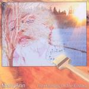

| Artist: | MarryAnn |
| Title: | The Harmony Of The Ecstasy |
| Label: | self produced? MH CD 001 SAZAS |
| Length(s): | 40 minutes |
| Year(s) of release: | 2004/2005 |
| Month of review: | [01/2006] |
| 1) | Life Escape | 3.39 |
| 2) | In The Name Of | 5.04 |
| 3) | The Harmony Of The Ecstasy | 4.58 |
| 4) | We Should Live Together | 4.48 |
| 5) | Revelations | 4.33 |
| 6) | Phoenix | 3.43 |
| 7) | The Conquest | 4.11 |
| 8) | This Song Is Like You | 4.47 |
| 9) | We Are All Beasts | 4.14 |
In The Name Of is more reverb rich, and I can imagine thinking here of a lightweight version of Vangelis' China. Still, the music lacks variety to be interesting to me. Very muzak. Halfway, a happy organ surprises us for no apparent reason.
On the title track there is at least a sense of urgency that makes me think we are going somehwre. Too bad, the melodies sometimes drop out, and we are left with little more than a beat. This is strongly reminiscent of TD in the eighties, but much more danceable (in a good way).
We Should Live Together is again very danceable albeit at a slower pace. The theme is quite strong, and the Art Of Noisy percussive synths are strong. The rhythm box is maybe a bit too prominent, but melodically and compositionally this is not bad.
Revelations has quite a few different passages, but it does not seem to go anywhere. Again the swing seems more important than anything. Phoenix is a melodic and repetitive song, and the same holds for The Conquest.
This Song Is Like You is more up-beat again, and less melodic. It is fairly static and when the synthetic steeldrums set in, then I loose all interest. We Are All Beasts does not bring much new, with its steady pace and synthetic sound.